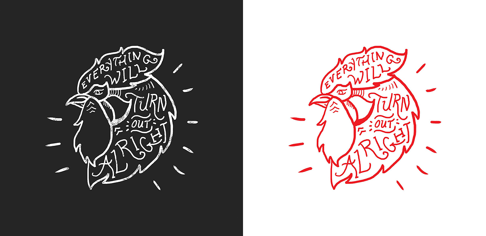
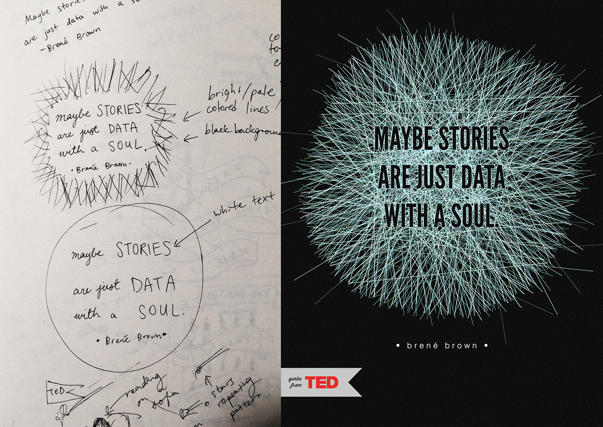

DESIGN NERD, BIOTECH BLOGGER, OCCASIONAL COMIC SANS CRIMINAL
PORTFOLIO
A closer look at some of my work...
DESIGN AND ILLUSTRATION
Design, illustration, and branding work I've done for various organizations and events.
CHANNELMETER REDESIGN
Walkthrough of the complete ChannelMeter redesign, from frontend website to internal systems and social media branding.
QUOTES FROM TED
In-depth process for the Quotes from TED project – illustrating lessons learned from a year of watching TED Talks.
ABOUT
My name is Katherine Liu – I’m a biotech aficionado, a student at Stanford, and a total Sherlock Holmes junkie.
Oh, and I love design and illustration.
My hobbies include learning web development, memorizing hexadecimal color codes, and obsessing over pixels. I also play the violin and speak a little Spanish – and I run Designbase, an online community for designers.
An overview of some of the design, illustration, and branding work I've done for various organizations and events over the years.
Personal and client-focused creative projects.
A selection of past digital branding work, from posters to logos:
Posters for different events and occasions – dance shows, concerts, and casebook covers.
A small set of logos illustrating three of the main characters.
Logos designed for other groups and events.
Although I work mostly on digital platforms, I also love stepping back and creating pieces with pen and paper.

ChannelMeter Redesign
ChannelMeter is a video analytics startup that was part of 500 Startups Batch 9.
Redesign of ChannelMeter's homepage.
As a UI design intern at ChannelMeter this past summer, I was responsible for their complete redesign effort – frontend website, internal systems, blog, social media, and pitch deck for 500 Startups' Demo Day.
Since I was the only designer on the team, I was able to touch almost every part of the product and have my designs shipped out everyday. The goal of the redesign was to give ChannelMeter a complete transformation in branding – I wanted to refresh their image as a simpler, more effective analytics tool. To provide a better sense of my design process, below is a brief walkthrough of how I went about redesigning the homepage.
ChannelMeter's original homepage.
Before moving into any digital prototyping, I sketch out some quick mockups with pen and paper. This was a great way to share my initial thoughts with the engineering team and also measure the feasibility of each design with our limited resources.
First run-through, just cleaning up the homepage. ChannelMeter wanted their redesign to be simpler and more crisp than their original site was.
I also experimented with several different ideas – one of them was adding a sidebar that would scroll outwards when hovered over.
The final redesign of the homepage: If the user has a specific video or channel in mind, they can enter their query into the search bar and immediately see some of the key analytics behind the content.
However, for users who are simply browsing the site and do not have anything particular in mind, they can jump into one of the colorful squares around the search bar – these represent the icons of a variety of popular channels, from sports channels to fashion channels.
And below are a few quick before-and-afters of other pages:
Original view of ChannelMeter's rankings page. Some points of confusion for users included the difficulty of comparing neighboring channels and the ability to pick certain topics to view – such as the top 100 videos of all-time versus the current month. Another source of uncertainty arose because the top five channels listed had 0 views because they were YouTube collections, not content creators.
Redesign of the rankings page – because ChannelMeter is, at its core, an analytics company, I knew we needed to place a much bigger focus on the numbers. The original view did not afford users the ability to easily compare the stats behind two channels or videos, so I cut down the extraneous visual patterning and emphasized the fundamental data. We also decided to add a sidebar that would give our users more options for topics they wanted to browse at a glance.
Before view of ChannelMeter's onboarding process.
After view of ChannelMeter's onboarding process. My goal here was to clean up the interface and add a visual cue through the three-step sidebar so the user knows that the process of connecting his or her YouTube account to ChannelMeter is going to be quick and simple.
Before view of ChannelMeter's internal dashboard, which clients saw when they logged into their accounts. A big problem here was the navigation – there were no straightforward indicators of which level of data the user was viewing, and the hierarchy of information was unclear.
Because the internal systems were a bit more complex to redesign, I sat down with the engineering team and went through, point by point, which features we wanted to keep, which features to group together to simplify, and which to cut out to create a better final user experience. We often sketched out our ideas on whiteboards before creating anything in digital form.
Final redesign of ChannelMeter's internal dashboard – after talking with community managers and users during client meetings, I wanted to place a larger focus on the key stats that users most want to see when they first log in. Also included on the new dashboard are the most-viewed videos for the user's channel, sorted by week, month, or all time, as well as a feed feature that gives an at-a-glance summary of the most recent and important channel updates and analytics.
We also added a few new features that users were looking for – for example, this channel details-by-day modal. In the world of YouTube, videos don't just grow more popular over weeks or months; viral overnight sensations are commonplace. To give our clients more insights into how their videos were performing on a short-term basis, we decided to add a daily breakdown option that popped up whenever a specific date was clicked within the dashboard.
To complete the redesign effort, I also did some work for ChannelMeter's blog and social media branding.
ChannelMeter's original blog, using a default Wordpress theme.
The blog redesign – I wanted to tie the branding back to the visual design of the new website. We also threw in a shout-out to San Francisco, where ChannelMeter is located.
Quotes from TED
In-depth process for the Quotes from TED project – illustrating lessons learned from a year of watching TED Talks.
The first two posters created for Quotes from TED.
I've been a huge TED Talks enthusiast for many, many years – some of my favorite talks include Malcolm Gladwell's "Choice, happiness, and spaghetti sauce" and Jack Andraka's "A promising test for pancreatic cancer... from a teenager."
To put some of the things I've learned from TED Talks into visual language, I decided to create a poster series illustrating quotes from various talks. Below I've shown part of my process, from ideation and sketching to the final products, created mostly with Adobe Photoshop.
A list of quotes I wanted to explore.
'Walk and talk. You'll be surprised at how fresh air drives fresh thinking.' -Nilofer Merchant
'Smart simply means that you're ready to learn.' -Freeman Hrabowski

'Maybe stories are just data with a soul.' -Brené Brown
I hope to continue building this collection in my spare time – in the meantime, see more frequent updates for the Quotes from TED project on my art blog.